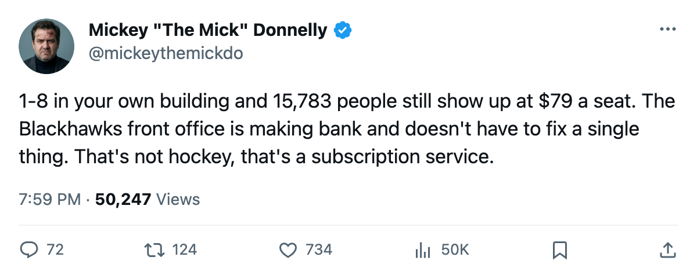
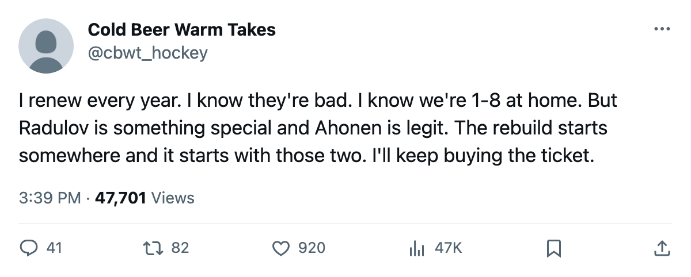

1-8 AT HOME, $79 A SEAT, AND 15,783 PEOPLE KEEP WALKING IN. CHICAGO DOESN'T NEED YOU TO WIN.
The worst home record in this league belongs to a club that profits like a winner every time it loses in front of its own building.
 Mickey "The Mick" DonnellyColumnist, ex-goalie · The Penalty Box
Mickey "The Mick" DonnellyColumnist, ex-goalie · The Penalty Box
The piece
 Chicago Blackhawks is 1-8 at home. Seven straight losses. Two and seven and three for the season. Twenty-eight goals for, forty-two against. And 15,783 people are paying $79 a night to sit in that building and watch a team that cannot win in front of its own fans.
Chicago Blackhawks is 1-8 at home. Seven straight losses. Two and seven and three for the season. Twenty-eight goals for, forty-two against. And 15,783 people are paying $79 a night to sit in that building and watch a team that cannot win in front of its own fans.
The per-point number tells you the rest: $5.42M per point, third-worst in the league. The payroll is $48.74M, almost the cheapest ticket in hockey, and the coach still can't win a home game. Not one in eight tries. He has had 8 chances in his own building and walked away with 2 points.
Here's what gets me. The club made $26.98M in profit per game last time the sheet was cut. Twenty-six million dollars. For being terrible. The owner doesn't need to fix anything. The seats fill, the money comes, and why would he spend a night awake about the lineup card?
The one bright spot nobody is using
Igor Radulov76 sits on the Bureau's Development Index at +11. He's 23, a 80 overall, 7 points in 13 games. He's the biggest riser on this roster and probably one of the top five form jumps in the league. The Index also has Ari Ahonen83 at +7, a 87-goaltender in 8 starts.  Steve McCarthy77 is +8, a 81 defenseman with 4 points.
Steve McCarthy77 is +8, a 81 defenseman with 4 points.
Three guys on a form climb. The team around them is 2-7-3 and the coach is running a lineup that produces 28 goals in 13 games. You cannot lose 7 straight with a +11 riser, a +7 goaltender, and a +8 defenseman unless the structure is broken.
Then you've got  Jay Pandolfo66 at -4 on the Index, a 70 overall in 13 games with 1 point. Thirty years old, on a losing team that can't protect a lead at home because it can't score enough to have one. And Chris Schmidt59 has a morale of 72, tied for the lowest in the league. He's a 63 center on $0.91M with 3 years left. That's not a star unhappy. That's a depth guy who knows what he's looking at every practice.
Jay Pandolfo66 at -4 on the Index, a 70 overall in 13 games with 1 point. Thirty years old, on a losing team that can't protect a lead at home because it can't score enough to have one. And Chris Schmidt59 has a morale of 72, tied for the lowest in the league. He's a 63 center on $0.91M with 3 years left. That's not a star unhappy. That's a depth guy who knows what he's looking at every practice.
The attendance rant nobody wants
Chicago pulls 15,783 bodies a night. For a team that is 1-8 in its own building. They could put up a banner that says "Thank you for the money" and it would be more honest than the product on the ice.
 Mark Bell80 leads the team with 30 PIM in 13 games. He's the 13th-most penalized man in the league. At least he's showing something.
Mark Bell80 leads the team with 30 PIM in 13 games. He's the 13th-most penalized man in the league. At least he's showing something.
The coach has 8 home games and 2 points from them. Igor Radulov is 23 years old and playing the best hockey of his career and the room can't win. That's on the man behind the bench, not on the rookie from the development index.
Chicago's front office is collecting $42.36M in revenue a game. They don't care about the standings. They care about the seat count. And right now, 15,783 people keep proving them right. Those 15,783 are the most loyal idiots in this league, and I say that with love.

